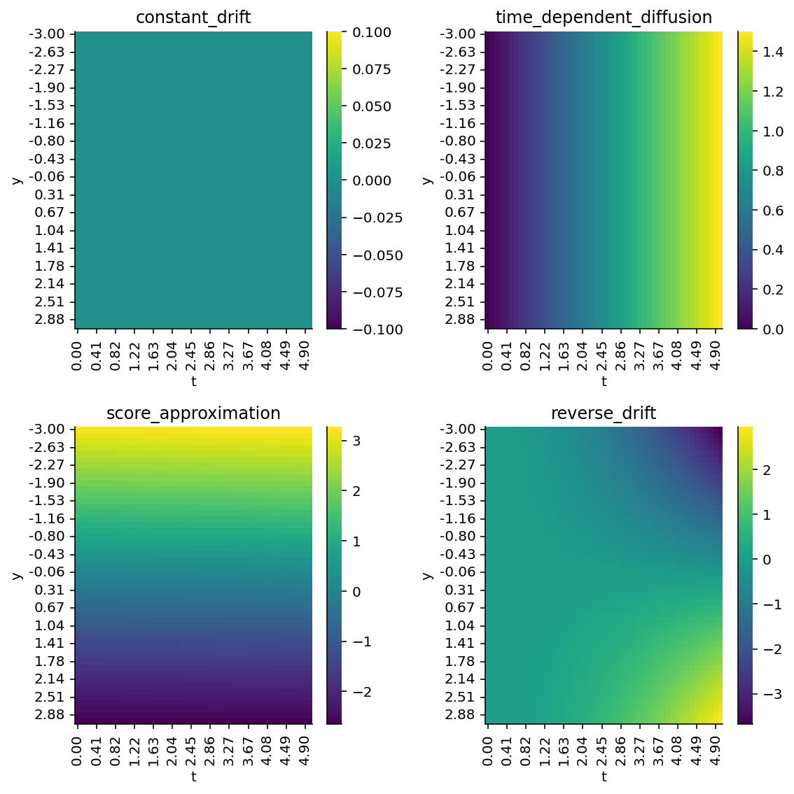

We’re going to take a small detour through ordinary differential equations (ODEs). ODEs, and their stochastic counterparts, Stochastic Differential Equations (SDEs), are an important technical advance in score-based generative modelling. In this section, we’re going to see how to use SDEs to noise up data, thereby replacing the noising step, and reverse-time versions of the SDEs to generate new data, thereby replacing the annealed Langevin dynamics step.
5.1 Ordinary differential equations
Let’s start with ODEs. ODEs are usually taught in undergraduate calculus classes, since they involve differentiation and integration. I do remember encountering them while studying in secondary school and junior college in Singapore, which is a testament to how advanced the mathematics curriculum in Singapore is.
ODEs are useful models of systems where we believe that the rate of change of an output variable is a math function of some input variable. In abstract mathematical symbols:
\[\frac{dy}{dx} = f(x, \theta)\]
Here, \(f\) simply refers to some mathematical function of \(x\) and the function’s parameters \(\theta\).
5.1.1 A classic ODE example
A classic ODE example that we might think of is that of a decay curve:
\[\frac{dy}{dt} = -y\]
Implemented in diffrax, which is a JAX package for differential equations, and wrapped in Equinox as a parameterized function, we have the following code:
class ODE(eqx.Module):
"""Equinox ODE module.
Wraps a very common ODE code pattern into a single object.
"""
drift: callable
def __call__(self, ts: np.ndarray, y0: float) -> np.ndarray:
"""Solve an ODE model.
:param ts: Time steps to follow through.
:param y0: Initial value.
:returns: The trajectory starting from y0.
"""
term = ODETerm(self.drift)
solver = Tsit5()
saveat = SaveAt(ts=ts, dense=True)
sol = diffeqsolve(
term, solver, t0=ts[0], t1=ts[-1], dt0=ts[1] - ts[0], y0=y0, saveat=saveat
)
return vmap(sol.evaluate)(ts)
For those of us who have learned about ODEs, the structure of the code above should look pretty familiar. The diffrax API neatly organizes what we need to solve ODEs:
the ODETerm, which is the \(\frac{dy}{dt}\) equation,
a solver, for which diffrax provides a library of them,
the initial and end points \(t_0\) and \(t_1\) along the \(t\) axis along with step size \(dt\),
the initial value of \(y\), i.e. \(y_0\).
Finally, when calling on the ODE, we evaluate the solution path from the starting time to the ending time, given an initial starting value.
Figure 5.2: Multiple solutions to the ODE \(f'(y) = -y\).
5.2 Stochastic Differential Equations
Stochastic differential equations (SDEs) extend ODEs by adding in noise into each step. SDEs can thus be thought of as having a “drift” component, in which the system being modeled by the SDE “drifts” through the vector field, and a “diffusion” component, in which the system’s state is perturbed with additional noise. SDEs have the general form:
\[dx = f(x, t)dt + g(t)dw\]
To paraphrase Yang’s blog post, here are the definitions of each of the terms.
\(f(x, t)\) is a drift function that produces a vector output, i.e. what would have been the ODE term. This term controls the “drift”-ing of the system in observed data space.
\(g(t)\) is a diffusion function that produces a scalar output, i.e. the scalar multiplier of \(dw\). This term adds “diffusive” noise to the output.
\(dw\) is the infinitesimal white noise term.
\(f(x, t)dt\) is usually referred to as the “ODE Term”, while \(g(t)dw\) is usually referred to as the “Control Term”. We can see that in the implementation of the SDE module below.
from score_models.models.sde import SDEprint(getsource(SDE))
class SDE(eqx.Module):
"""Equinox SDE module.
Wraps a very common SDE code pattern into a single object.
"""
drift: callable
diffusion: callable
def __call__(self, ts: np.ndarray, y0: float, key: random.PRNGKey) -> np.ndarray:
"""Solve an SDE model.
:param ts: Time steps to follow through.
:param y0: Initial value.
:param key: PRNG key for reproducibility purposes.
:returns: The trajectory starting from y0.
"""
brownian_motion = VirtualBrownianTree(
ts[0], ts[-1], tol=1e-3, shape=(), key=key
)
terms = MultiTerm(
ODETerm(self.drift), ControlTerm(self.diffusion, brownian_motion)
)
solver = Heun()
saveat = SaveAt(t0=True, ts=ts, dense=True)
sol = diffeqsolve(
terms, solver, t0=ts[0], t1=ts[-1], dt0=ts[1] - ts[0], y0=y0, saveat=saveat
)
return vmap(sol.evaluate)(ts)
5.2.1 Noisy Decay
For illustration, let’s see what happens we we apply homoskedastic noise to the decay process. Here, homoskedastic noise refers to a noise term that is independent of time. Firstly, we have it defined in code.
from functools import partialdef homoskedastic_diffusion(t, y, args):"""Time-independent noise."""return0.3
Next, we set up the SDE and solve it going forward in time.
from jax import random n_timesteps =17n_starting =1001demo_key = random.PRNGKey(55)y0_key, key = random.split(demo_key)y0s = random.normal(y0_key, shape=(n_starting,)) # We solve the SDE for each draw from a Guassian.sde_keys = random.split(key, len(y0s))ts = np.linspace(0, 4, n_timesteps)sde = SDE(drift=exponential_decay_drift, diffusion=homoskedastic_diffusion)sde = partial(sde, ts)ys = vmap(sde)(y0s, sde_keys)
Now, let’s plot the trajectories:
Code
for y in ys: plt.plot(ts, y, alpha=0.01, color="blue")plt.xlabel("t")plt.ylabel("y")sns.despine()
Figure 5.3: SDE with exponential decay drift and homoskedastic disffusion.
5.2.2 Oscillating SDE
Let’s do another example: oscillating SDEs! Here, we have an oscillating system (cosine drift) in which we add a homoskedastic diffusion term.
Figure 5.5: Marginal distribution at each time point of the oscillating SDE.
5.2.3 Noising SDE
For the purposes of noising up date, we would want an SDE that noises up data with increasing amounts of noise with time. Here, we can design the SDE such that the drift would be 0 at all time points, while the diffusion term would be some multiplier on time.
def constant_drift(t, y, args):"""Constant drift term."""return0def time_dependent_diffusion(t, y, args):"""Diffusion term that increases with time."""return0.3* t
for y in noising_ys: plt.plot(ts_noising, y, color="blue", alpha=0.01) plt.xlabel("t") plt.ylabel("y") plt.title(f"{n_starting} sample trajectories") sns.despine()
Figure 5.6: A “noising” SDE that progressively adds more noise over time.
As we can see above, we are able to obtain greater amounts of noise from a tight starting point. We can verify that by looking at the marginal distributions.
Figure 5.7: Marginal distribution at each time point of a noising SDE.
From the marginal distributions at each noise timestep, we see that we indeed have ever increasing amounts of noise. (Note how the x-axis scale is the same on all of the plots.) The empirical standard deviation from the mean is also shown on the plots above.
5.3 Reverse Time SDEs
With constant drift and time-dependent diffusion, we can noise up data in a continuous fashion. How do we go backwards? Here is where solving the reverse time SDE will come in. Again, we need to set up the drift and diffusion terms. Here, the drift term is:
\[f(x, t) - g^2(t) \nabla_x \log p_t (x) \]
where:
\(f(x, t)\) is the drift term of the forward SDE,
\(g(t)\) is the diffusion term of the forward SDE, and
\(\nabla_x \log p_t (x)\) is the score function of the data.
And the diffusion term is:
\[g(t) dw\]
which is basically the diffusion term of the forward SDE.
However, the tricky part here is that we don’t have access to \(\nabla_x \log p_t (x)\) (the true score function). As such, we need to bring out our score model approximator! To train the score model approximator, we need the analogous score matching objective for continuous time problems.
5.4 Continuous Time Score Models
In an ideal situation, we would train the score matching model using a weighted combination of Fisher divergences:
Now, just like before, we don’t have access to \(\nabla_x \log p_t (x)\), so we instead use the score matching objective by Hyvärinen (Hyvärinen 2005). What’s really cool here is that we can train the models using the noised up data. The protocol is basically as follows:
Noise up our original data using an SDE.
Train score models to estimate the score function of the noised up data.
Use the approximate score function to calculate the reverse-time SDE.
5.4.1 Model implementation
To get this right, we need a score function approximator that is compatible with SDEs, i.e. they accept both x and t as part of the function signature and return the gradient value.
score: float= score_model(x, t)
Let’s implement it below:
from jax import jacfwdfrom jax import nnimport equinox as eqxclass SDEFeedForwardModel1D(eqx.Module):"""Time-dependent score model. We choose an MLP here with 2 inputs (`x` and `t` concatenated), and output a scalar which is the estimated score. """ mlp: eqx.Moduledef__init__(self, in_size=2, out_size=1, width_size=256, depth=1, activation=nn.softplus, key=random.PRNGKey(45), ):self.mlp = eqx.nn.MLP( in_size=in_size, out_size=out_size, width_size=width_size, depth=depth, activation=activation, key=key, )@eqx.filter_jitdef__call__(self, x: float, t: float):"""Forward pass. :param x: Data. Should be of shape (1, :), as the model is intended to be vmapped over batches of data. :returns: Estimated score of a Gaussian. """ifisinstance(x, float) or x.ndim ==0: x = np.array([x])ifisinstance(t, float) or x.ndim ==0: t = np.array([t]) x = np.array([x.squeeze(), t.squeeze()])returnself.mlp(x).squeeze()
There are a few design notes for the model above that we’d like to note.
Firstly, note how its structure is essentially identical to the neural net score model from before, i.e. a multi-layer perceptron, except that now it takes in both x and t as its inputs. This is important because we are no longer interested in a discrete score model, with one per time point. Instead, we are interested in a score model that can estimate the score function of our noised up data at any time point along the SDE-based continuous-time noising function.
Let’s now instantiate the model:
model = SDEFeedForwardModel1D( width_size=256, depth=2, activation=nn.softplus, key=random.PRNGKey(55))
5.4.2 Loss function
Now, we need to calculate the loss for a batch of data. As with before, we need a score-matching loss for each noise level (i.e. for each t). In here, we have the model’s dependence on time (i.e. noise level) encoded as part of the model structure.
from score_models.losses.sde import score_matching_loss as sde_score_matching_loss, joint_score_matching_loss as sde_joint_score_matching_lossprint(getsource(sde_score_matching_loss))
def score_matching_loss(
model: Union[eqx.Module, Callable], noised_data: np.ndarray, t: float
) -> float:
"""Score matching loss for SDE-based score models.
:param model: Equinox model.
:param noised_data: Batch of data from 1 noise scale of shape (batch, n_data_dims).
:param t: Time in SDE at which the noise scale was evaluated.
:returns: Score matching loss for one batch of data.
"""
model = partial(model, t=t)
dmodel = jacfwd(model, argnums=0)
term1 = vmap(dmodel)(noised_data)
if term1.ndim > 1:
term1 = vmap(np.diagonal)(term1)
term2 = 0.5 * vmap(model)(noised_data) ** 2
inner_term = term1 + term2
summed_by_dims = vmap(np.sum)(inner_term)
return np.mean(summed_by_dims)
print(getsource(sde_joint_score_matching_loss))
@eqx.filter_jit
def joint_score_matching_loss(
model: Union[eqx.Module, Callable], noised_data_all: np.ndarray, ts: np.ndarray
):
"""Joint score matching loss.
:param model: An equinox model.
:param noised_data_all: An array of shape (time, batch, n_data_dims).
:param ts: An array of shape (time,).
:returns: Score matching loss, summed across all noise scales.
"""
loss_score = 0
for noise_batch, t in zip(noised_data_all, ts):
scale = t
loss_score += score_matching_loss(model, noise_batch, t) * scale
return loss_score
5.4.3 Train score model
Now, let’s train the score model on our noised up data. Below, we have our training loop.
Figure 5.8: Training loss curve for our continuous-time score model.
5.4.4 Sanity-check: score estimators match up with alternate calculation
Because we started with Gaussian noise and expanded the noise outwards, we still have Gaussians. Let’s check that the scores match a Gaussian’s score fitted onto the marginal distributions at each timepoint.
Figure 5.9: Estimated (blue) vs. approximated (red) score functions at each time evaluation. Estimated score comes from taking the location (mean) and scale (stdev) of the observed data, while approximated score comes from the time-based score model.
As seen in Figure 5.9, it looks like our score model is able to approximate a time-dependent score function! The score function is least well-approximated within the region of 2 sigmas of support, even if not across the full 3 sigmas. This is encouraging. We should also note that the t=4.00 timepoint is the least well-approximated compared to the t=1.00 timepoint.
Now, we’re going to look at the reverse drift. In an SDE, the drift term dictates where the system is going to move towards in the next time step. Let’s plot the vector field evaluated at each time step t.
def reverse_drift(t: float, y: float, args: tuple): f = constant_drift(t, y, args) g = time_dependent_diffusion(t, y, args) s = updated_score_model(y, t)return f -0.5* g**2* s
Let’s plot each of these four terms to make sure we get a good feel for what’s going on.
Code
import pandas as pd from tqdm.auto import tqdm # Plot constant drift as a function of y and t.ys = np.linspace(-3, 3, 50)ts = np.linspace(0, 5, 50)function_evals = []for yval in ys:for t in ts: dd =dict() dd["constant_drift"] = constant_drift(y=yval, t=t, args=()) dd["time_dependent_diffusion"] = time_dependent_diffusion(y=yval, t=t, args=()) dd["score_approximation"] = updated_score_model(x=yval, t=t) dd["reverse_drift"] = reverse_drift(y=yval, t=t, args=()) dd["y"] = (yval) dd["t"] = t function_evals.append(dd)columns = ["constant_drift", "time_dependent_diffusion", "score_approximation", "reverse_drift"]function_df = pd.DataFrame(function_evals)for column in function_df.columns: function_df[column] = function_df[column].astype(float)fig, axes = plt.subplots(nrows=2, ncols=2, figsize=(8, 8))for ax, col inzip(axes.flatten(), columns): function_eval = function_df[["y", "t", col]].pivot_table(index="y", columns="t", values=col) sns.heatmap(function_eval, ax=ax, cmap="viridis") ax.set_title(col) ax.set_xticklabels([f"{float(i._text):.2f}"for i in ax.get_xticklabels()]) ax.set_yticklabels([f"{float(i._text):.2f}"for i in ax.get_yticklabels()])sns.despine()plt.tight_layout()

Figure 5.10: Heatmap of each of the component functions in reverse_drift.
constant_drift is always 0, so no problem.
time_dependent_diffusion shows how diffusion increases over time, independent of the value of y, which is also correct, so no problem.
score_approximation shows how the Gaussian score approximator gives a gradient that is positive-valued when y is negative and vice versa, which pushes us towards region of high density. Also correct.
reverse_drift shows us something interesting. We will end up with exploding values because +ve values drift more positive, while -ve values drift more -ve, until we hit very small time steps, and then we have no directional drift.
Now, we could, in theory, run the SDE in reverse, but in my own testing of the equations, I found that I would encounter numerical stability issues. Because of the positive and negative drift zones in the reverse drift, we would end up getting extremely large negative or positive numbers. Hence, I skipped over solving the reverse SDE and instead went straight to probability flow ODEs, which are the very, very exciting piece of this entire body of work.
5.5 Probability Flow ODEs
Now that we’ve recapped what an ODE is, and have seen what SDEs can do for noising up our data, we can move on to probability flow ODEs. Why are these important? It’s because probability flow ODEs provide a deterministic mapping from our noise distribution to our data distribution and vice versa. In doing so, we can basically get rid of Langevin dynamics sampling and replace it entirely with a probability flow ODE instead. Before we go on, though, let’s take a quick look the key ODE that we need to solve:
Just like the SDE above, the terms carry the same meaning:
\(f(x, t)\) is a drift function that produces a vector output,
\(g(t)\) is a diffusion function that produces a scalar output,
\(\nabla_x \log p_t (x)\) is the score function, also replaceable by our neural net approximator
and \(dw\) is infinitesimal white noise.
(paraphrased from Yang’s blog)
Now, if you study this carefully… the drift term is exactly the drift term we defined above! That means if we solve for the reverse drift ODE, we will get a path traced from the noise distribution back to the orginal data distribution! Let’s see that in action.
Figure 5.11: Probability flow ODE from noise distribution (t=5) back to original data (t=0).
5.6 Generalizing to a Mixture Distribution
Thus far, we saw a probability flow ODE in action for a univariate, unimodal distribution. Let’s see if we can make the thing work for a mixture distribution.
5.6.1 Generate Mixture Data
We will start by generating a mixture Gaussian dataset.
A score model that estimates the score of the data, and
A probability flow ODE that maps from noise back to data (reverse-time).
That last point is the coolest of them all, in my opinion. Previously, we used Langevin dynamics sampling to sample out new sequences. While random sampling is simple, it also aesthetically felt less elegant than what we have with an ODE. The key ingredients here are:
A time-dependent score model that can calculate (or estimate) the score of our noised distribution,
The known noise generator “diffusion” function, and
The known drift function,
and all we need to do is solve a neural ODE while reversing time. Then, by drawing new coordinates from the noise distribution, we can deterministically map them back to the original data space!
5.7 References
Hyvärinen, Aapo. 2005. “Estimation of Non-Normalized Statistical Models by Score Matching.”Journal of Machine Learning Research 6 (24): 695–709. http://jmlr.org/papers/v6/hyvarinen05a.html.